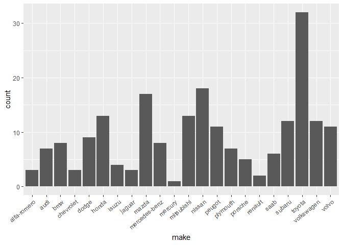
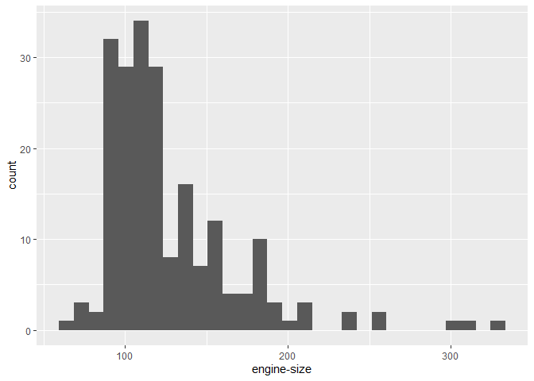
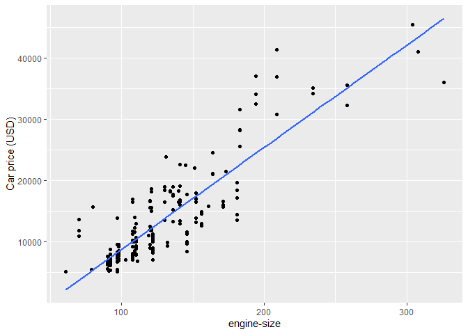

This package is designed to assist in the exploration and visualization of data related to car attributes such as make, length, and other important factors that can affect pricing. The functions within the package allow users to preprocess the data, perform regression analysis, and evaluate model performance.
Installation
You can install the development version of carpriceprediction from GitHub with:
# install.packages("devtools")
devtools::install_github("DSCI-310/dsci-310-group-07-pkg")Usage
In order to use the functions in the package, load the carpriceprediction library:
library(carpriceprediction)Data
In this example, we will use the actual automobile dataset. And the first 6 lines of automobile is as follows:
#> # A tibble: 6 × 26
#> symbol…¹ norma…² make fuel-…³ aspir…⁴ num-o…⁵ body-…⁶ drive…⁷ engin…⁸ wheel…⁹
#> <fct> <dbl> <fct> <fct> <fct> <fct> <fct> <fct> <fct> <dbl>
#> 1 3 NA alfa… gas std two conver… rwd front 88.6
#> 2 3 NA alfa… gas std two conver… rwd front 88.6
#> 3 1 NA alfa… gas std two hatchb… rwd front 94.5
#> 4 2 164 audi gas std four sedan fwd front 99.8
#> 5 2 164 audi gas std four sedan 4wd front 99.4
#> 6 2 NA audi gas std two sedan fwd front 99.8
#> # … with 16 more variables: length <dbl>, width <dbl>, height <dbl>,
#> # `curb-weight` <dbl>, `engine-type` <fct>, `num-of-cylinders` <fct>,
#> # `engine-size` <dbl>, `fuel-system` <fct>, bore <dbl>, stroke <dbl>,
#> # `compression-ratio` <dbl>, horsepower <dbl>, `peak-rpm` <dbl>,
#> # `city-mpg` <dbl>, `highway-mpg` <dbl>, price <dbl>, and abbreviated
#> # variable names ¹symboling, ²`normalized-losses`, ³`fuel-type`, ⁴aspiration,
#> # ⁵`num-of-doors`, ⁶`body-style`, ⁷`drive-wheels`, ⁸`engine-location`, …You can save variables with
saveVar(var = automobile$price, name = "price.rds", out_dir = "result")
# will print "price.rds saved to your/absolute/path/.../result"
# will return "price.rds saved to result"which is similar to saveRDS in base R, except that saveVar will create the output directory if it does not exist.
EDA
(getR2(automobile,n = 2))
#> r_sqr names
#> 1 0.796 make
#> 2 0.761 engine-size
plots <- plotAll(automobile, c("make","engine-size"))
# `make` is a factor, hence show the barplot
plots[[1]]
# `engine-size` is continuous, henshow show the histogram and scatterplot with a linear regression line
plots[[2]]
plots[[3]]
Fit models
# By specifying the set = "basic", the result contains all columns
training_df<-get_tr_tst(automobile,"basic")[[1]]
testing_df<-get_tr_tst(automobile,"basic")[[2]]
# By specifying the set = "at", the result contains all columns except ID
training_df_at<-get_tr_tst(automobile,"at")[[1]]
testing_df_at<-get_tr_tst(automobile,"at")[[2]]
# By specifying the set = "sub", the result contains columns except ID or categorical variables with more than 2 levels
training_df_sub<-get_tr_tst(automobile,"sub")[[1]]
testing_df_sub<-get_tr_tst(automobile,"sub")[[2]]
# training matrices
training_matrices <- get_trm_tsm(training_df_sub,
testing_df_sub,
set = "training")
x_train_mat <- training_matrices[[1]]
y_train_mat <- training_matrices[[2]]
# testing matrices
testing_matrices <- get_trm_tsm(training_df_sub,
testing_df_sub,
set = "testing")
x_test_mat <- testing_matrices[[1]]
y_test_mat <- testing_matrices[[2]]Lasso regression:
# Lasso regression
lasso_mods <-
get_model_plot(x_train_mat,
y_train_mat,
model = "lasso",
ask = "modeling")
# model with lambda resulting in minimum mse
lasso_mod <- lasso_mods[[1]]
# model with lambda resulting in (minimum mse + 1SE)
lasso_mod_1se <- lasso_mods[[2]]
# Training results with all lambdas
lasso_cv <- lasso_mods[[3]]
# visualize lasso_cv:
# get_model_plot(x_train_mat, y_train_mat, model = "lasso", ask = "plot")Ridge regression:
ridge_mods <-
get_model_plot(x_train_mat,
y_train_mat,
model = "ridge",
ask = "modeling")
# model with lambda resulting in minimum mse
ridge_mod <- ridge_mods[[1]]
# model with lambda resulting in (minimum mse + 1SE)
ridge_mod_1se <- ridge_mods[[2]]
# Training results with all lambdas
ridge_cv <- ridge_mods[[3]]
# visualize ridge_cv:
# get_model_plot(x_train_mat, y_train_mat, model = "ridge", ask = "plot")Performance of different models:
get_er_cv(training_df_at, training_df_sub, kfolds = 10, lasso_cv, ridge_cv)
#> # A tibble: 5 × 2
#> Model R_MSE
#> <chr> <dbl>
#> 1 LASSO Regression with minimum MSE 671.
#> 2 LASSO Regression with 1SE MSE 810.
#> 3 Ridge Regression with minimum MSE 658.
#> 4 LASSO Regression with 1SE MSE 846.
#> 5 OLS Full Regression 1052.Code of Conduct
Please note that the carpriceprediction project is released with a Contributor Code of Conduct. By contributing to this project, you agree to abide by its terms.